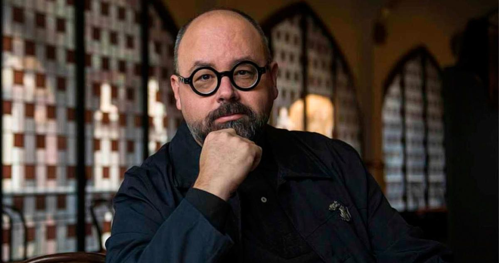

Otros datos de interés
Obras
Narrativa Juvenil
- El príncipe de la niebla (1993, Edebé)
- El palacio de la medianoche (1994, Edebé)
- Las luces de septiembre (1995, Edebé)
- Marina (1999, Planeta)
Narrativa adulta
- La sombra del viento (2001, Planeta)
- El juego del ángel (2008, Planeta)
- El prisionero del cielo (2011, Planeta)
- El laberinto de los espíritus (2016, Planeta)
Relatos
- La ciudad del vapor (2020, Planeta), recopilación de todos los cuentos del autor:
- Blanca y el adiós
- Sin Nombre
- Una señorita de Barcelona
- Rosa de Fuego
- El principe de Parnaso
- Leyenda de Navidad
- Alicia, al alba
- Hombres de gris
- la mujer de vapor
- Gaudí en Manhattan
- Apocalipsis en dos minutos